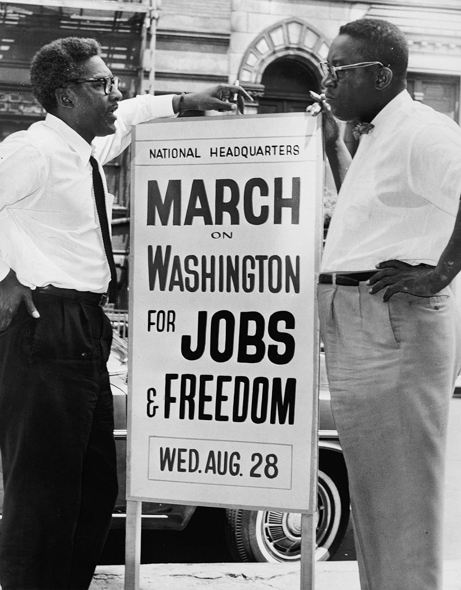
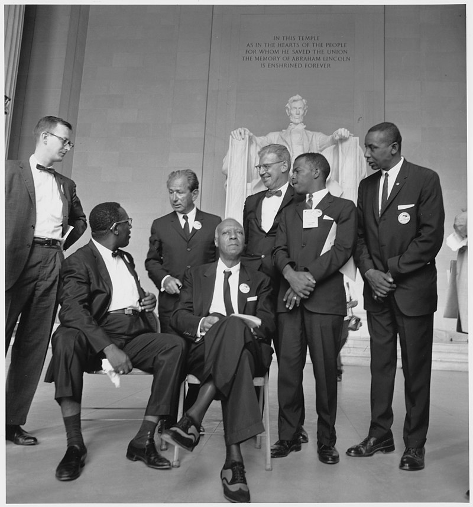

La marche sur Washington
28 août 1963

La marche sur Washington de 1963 fut organisée par un groupe de défenseurs des droits civiques, de syndicats et d'organisations religieuses. Le nombre des participants varie de 200 000 à plus de 300 000 selon les estimations. Environ 80 % des marcheurs étaient des Afro-Américains et 20 % des Blancs ou d'autres groupes ethniques. Au succès de cette marche, on doit en partie le vote du Civil Rights Act de 1964 et du Voting Rights Act de 1965.
La marche était organisée par Asa Philip Randolph, fondateur du premier syndicat noir, James L. Farmer, Jr. (président du Congress of Racial Equality), John Lewis (président du Student Nonviolent Coordinating Committee), Martin Luther King (président du Southern Christian Leadership Conference), Roy Wilkins (président de la NAACP), Whitney Young (président de la National Urban League) et Bayard Rustin, qui avait déjà organisé la Journée de la réconciliation de 1947, Anna Arnold Hedgeman.

La marche débuta au Washington Monument et se termina au Lincoln Memorial, distant d'un kilomètre, avec un programme de discours et de musique. Parmi ceux qui s'exprimèrent, les six dirigeants des droits civiques, les Big Six, des dirigeants des religions catholique, protestante et israélite, le syndicaliste Walter Reuther. La seule femme à prendre la parole fut Joséphine Baker, en uniforme de l'armée de l'air française. Le discours de James Farmer, alors emprisonné en Louisiane, fut lu par Floyd McKissick.
Plusieurs chanteurs animèrent la manifestation, comme Mahalia Jackson, Marian Anderson, le trio Peter, Paul and Mary, Odetta, le groupe vocal The Freedom Singers, Bob Dylan y interprète plusieurs chansons dont Only a Pawn in Their Game, sur la haine raciale dans la culture des blancs du Sud qui conduisit à l'assassinat de Medgar Evers, et When the Ship Comes In, entonnée également par Joan Baez. Joan Baez a également chanté We shall overcome.
La marche et les discours furent largement couverts par les médias américains et internationaux.